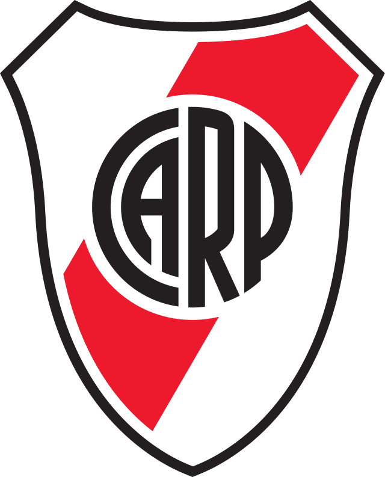

Esta proyecto de Desarrollo Web va a estar dedicado a una de mis pasiones, el Club Atletico River Plate. La idea es que el usuario, pueda encontrar en esta página la información del equipo de futbol. Si bien, River no es solo futbol, ya que cuenta con jardín, primario, secundario, universidad y demás deportes federados, la idea es hacer un seguimiento del equipo de fútbol en la actualidad, junto con imagenes que son icónicas a mi consideración y espero del simpatizante. En esta página entonces, se hará foco en las competiciones actuales, tales como la Copa Argentina, la Liga Profesional y la Copa Libertadores.
